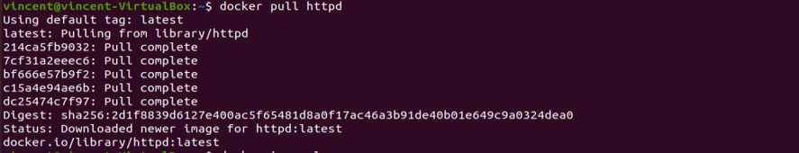
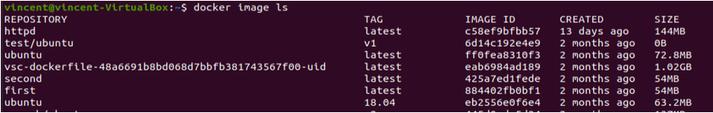
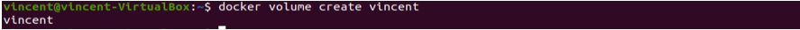
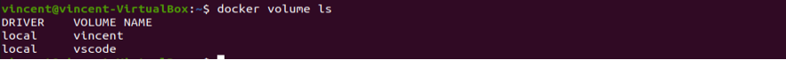
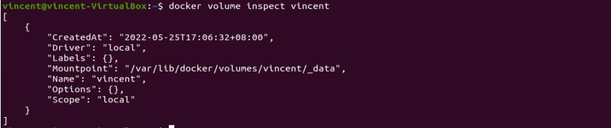
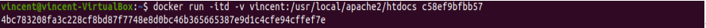
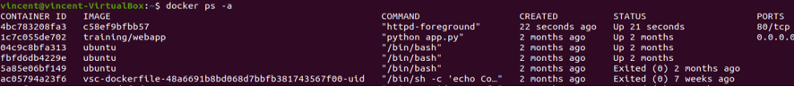

(網站功能簡介)註冊帳號之後=>登入=>可以更改自己的頭像(按edit提交檔案)=>提交之返回前一個網頁提交表單=>可以看到自己的頭像改了=>按home可以回到主頁面並且右上角頭像也會改變(都是使用php)
Docker架網站 (心得筆記)
創立container,volume
將httpd的image檔下載下來 => docker pull httpd
確認是否成功下載 => docker image ls 得到Image id (Ex:c58ef9bfbb57)
創造一個volume => docker volume create name
確認是否成功建立volume => docker volume ls
查看volume內容 => docker volume inspect name
創造一個container並和volume連結 =>
docker run -itd -v name:/usr/local/apache2/htdocs image id
name是先前volume的名字(Ex:vincent)
/usr/loacal/apache2/htdocs是之後container內的檔案路徑
Image id是先前第二步得到的

查看container是否建立 => docker ps -a 得到container id
執行container => docker run -it container id /bin/bash (container id是上一步得到的)

進到container內後前往到htdocs/資料夾內 =>
ls -> cd htdocs/ -> ls 即可看到裡面已有的index.html
接著創立一個檔案 => touch info.txt

利用exit 離開container
查看container是否連接到volume => cd volume_pathway
volume_pathway是第五步內”Mount point” 內的路徑,接著ls便能看到剛剛創立的info.txt了!!!

逆向回去
在volume內建立一個檔案 => touch new.txt 接著ls確認是否成功新增

回到container內 => docker start container id ,因為剛才exit container了,所以要重新開啟

重啟一次container => docker exec -it container id /bin/bash
接著進到htdocs資料夾 => cd htdocs/
最後ls

如何打開建立的網頁?
先下載資源包 => apt-get update

再下載另一個資源包 => apt-get install -y iproute2

顯示ip 位置 => ip addr show ,得到ip位置 172.17.0.5

打開網頁輸入172.17.0.5就可以看到了!!! (如果失敗請確認網址前面是http而非https)